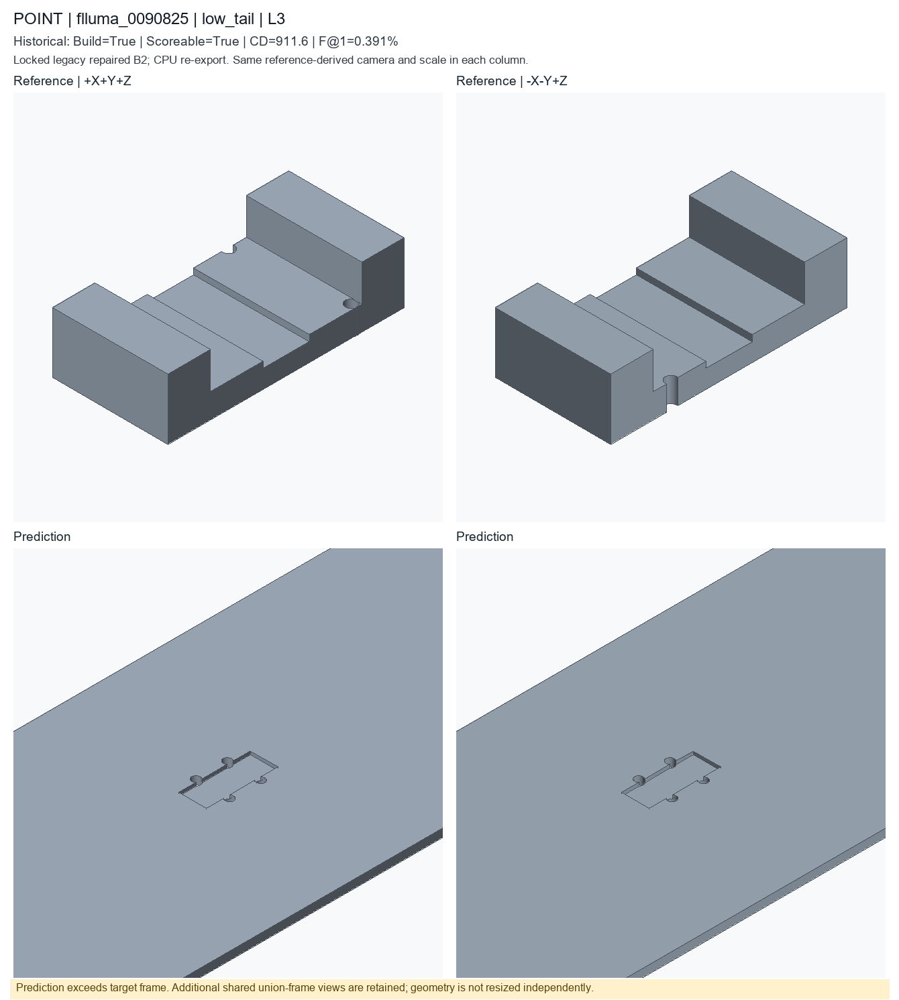
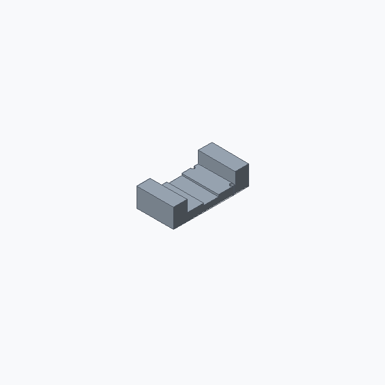
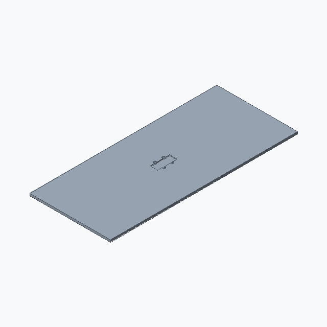
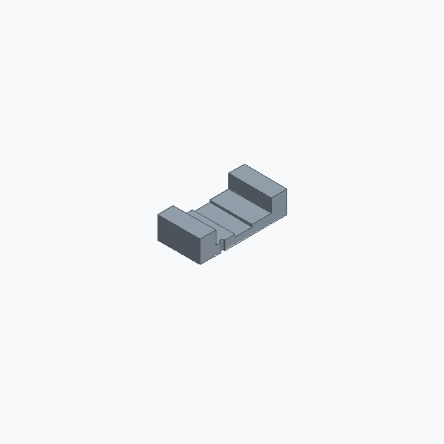
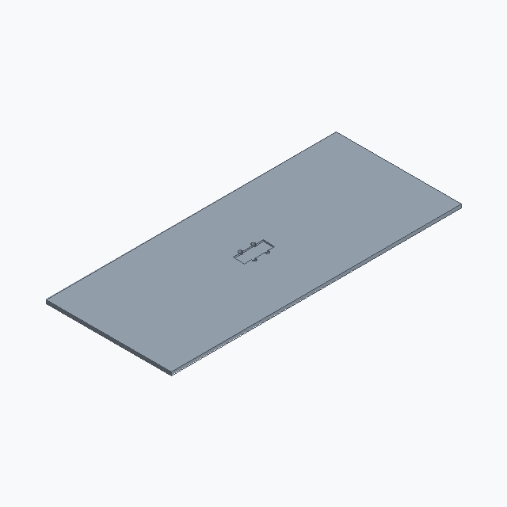

low_tail; L3; historical deployed repaired B2. Candidate status is unchanged.
Nearest complete-scoreable-cohort f1 percentile0.1, then cd percentile0.9; already registered IDs excluded
These are new CPU exports of locked historical code, not newly generated model predictions or recovered original temporary STEP files. Executable does not mean semantically accurate. Historical seed/checkpoint-byte binding remains unresolved.

Both meshes use the same enlarged frame. These views supplement, not replace, the target-framed images above.




Input asset: Original point NPZ source for normalized1024-FPS inference; processed tensor not retained/created here. CAD renders above show geometry, not a fabricated point-cloud or descriptor input.
A with 2 parametric through holes, approximately 86.5 by 42.3 by 22.3 mm. Pipe clamp with 2 bolt holes, 1 pocket, and mirrored geometry.
PART flluma_0005000 CAT pipe_clamp UNITS mm SEED 20265514 PARAM clamp_jaw_height 10.1 MIN 3 MAX 24 EXPR thickness*1.15 SEM clamp_jaw_height PARAM clamp_jaw_width 10.1 MIN 4 MAX 24 EXPR width*0.166 SEM clamp_jaw_width PARAM clamp_length 16.1 MIN 8 MAX 50 EXPR width*0.206 SEM overall_length PARAM clamp_thickness 5.1 MIN 2 MAX 14 EXPR thickness*0.82 SEM thickness PARAM clamp_width 23.1 MIN 6 MAX 42 EXPR height*0.43 SEM overall_width PARAM height 109.1 MIN 20 MAX 80 SEM overall_height PARAM hole_radius 1.52 MIN 0.8 MAX 5 SEM hole_radius PARAM pocket_width 26.1 MIN 16 MAX 80 EXPR width*0.238 SEM pocket_width PARAM thickness 3 MIN 2 MAX 25 SEM thickness PARAM width 253.1 MIN 20 MAX 120 SEM overall_width F plate_001 OP_PLATE SEM base_plate ROLE primary_body PARAMS height=@height thickness=@thickness width=@width F box_001 OP_BOX SEM clamp_jaw ROLE secondary_feature PARAMS height=@clamp_jaw_height length=@clamp_jaw_width width=@clamp_thickness F translate_001 OP_TRANSLATE SEM placement ROLE secondary_feature DEP box_001 PARAMS offset=[0,31.15,-10.05] F join_001 OP_BOOLEAN_JOIN SEM joined_clamp_jaw ROLE secondary_feature DEP plate_001,translate_001 TARGET plate_001,translate_001 F box_002 OP_BOX SEM clamp ROLE secondary_feature PARAMS height=@clamp_length length=@clamp_width width=10.8 F translate_002 OP_TRANSLATE SEM placement ROLE secondary_feature DEP box_002 PARAMS offset=[10.182,22.625,8.475] F mirror_001 OP_MIRROR SEM pattern ROLE pattern_feature DEP translate_002 PARAMS axis=X F join_002 OP_BOOLEAN_JOIN SEM joined_clamp_jaw ROLE secondary_feature DEP join_001,mirror_001 TARGET join_001,mirror_001 F pocket_001 OP_RECTANGULAR_POCKET SEM pocket ROLE functional_cut DEP join_002 TARGET join_002.top_face PARAMS depth=1.2 length=10.082 width=@pocket_width F hole_001 OP_HOLE_PATTERN SEM bolt_hole_pattern ROLE functional_feature DEP pocket_001 TARGET pocket_001.top_face PARAMS count=4 depth=THROUGH positions=[[-6.126,-5.715],[6.126,-5.715],[-6.126,5.715],[6.126,5.715]] radius=@hole_radius END
# Literal first40 lines of executed prediction; full program is prediction.py
params = Parameters()
params.add('clamp_jaw_height', 10.1, min=3.0, max=24.0, expression='thickness * 1.15', semantic_type='clamp_jaw_height')
params.add('clamp_jaw_width', 10.1, min=4.0, max=24.0, expression='width * 0.166', semantic_type='clamp_jaw_width')
params.add('clamp_length', 16.1, min=8.0, max=50.0, expression='width * 0.206', semantic_type='overall_length')
params.add('clamp_thickness', 5.1, min=2.0, max=14.0, expression='thickness * 0.82', semantic_type='thickness')
params.add('clamp_width', 23.1, min=6.0, max=42.0, expression='height * 0.43', semantic_type='overall_width')
params.add('height', 109.1, min=20.0, max=80.0, semantic_type='overall_height')
params.add('hole_radius', 1.52, min=0.8, max=5.0, semantic_type='hole_radius')
params.add('pocket_width', 26.1, min=16.0, max=80.0, expression='width * 0.238', semantic_type='pocket_width')
params.add('thickness', 3, min=2, max=25, semantic_type='thickness')
params.add('width', 253.1, min=20.0, max=120.0, semantic_type='overall_width')
part = Part('flluma_0005000', category='pipe_clamp', parameters=params, seed=20265514, sample_id='flluma_0005000', units='mm')
plate = part.plate(name='clamp_base', width=params['width'], height=params['height'], thickness=params['thickness'], semantic_type='base_plate')
pocket = part.rectangular_pocket(name='pipe_clearance_channel', target=plate.top_face(), length=10.082, width=params['pocket_width'], depth=1.2, semantic_type='pocket')
box = part.box(name='clamp_jaw_seed', length=params['clamp_jaw_width'], width=10.8, height=params['clamp_jaw_height'], semantic_type='clamp_jaw')
moved = part.translate(name='place_clamp_jaw', target=box, offset=[0.0, 31.15, -10.05], semantic_type='placement')
join = part.boolean_join(name='join_clamp_jaw', target=plate, tool=moved, semantic_type='joined_clamp_jaw')
pocket_2 = part.rectangular_pocket(name='pipe_clearance_channel_2', target=join.top_face(), length=10.082, width=params['pocket_width'], depth=1.2, semantic_type='pocket')
holes = part.hole_pattern(name='clamp_bolt_holes', target=pocket_2.top_face(), radius=params['hole_radius'], depth='through', positions=[[-6.126, -5.715], [6.126, -5.715], [-6.126, 5.715], [6.126, 5.715]], semantic_type='bolt_hole_pattern')
__all__ = ['part']